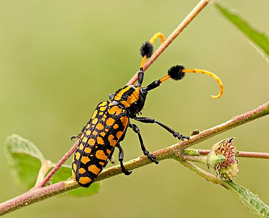
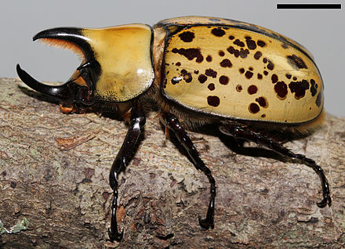
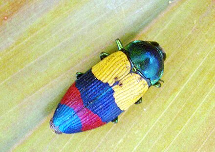

A. approximator is a beetle in the Cerambycidae (longhorn beetle) family. It is native to Southeast Asia and has cute puffballs on its antennae used for chemical sensing.
A. approximator">
D. tityus, also known as the Eastern Hercules Beetle, is a beetle in the Scarabaeidae (scarab beetle) family. It is native to the eastern US and can eat bananas.
D. tityus">
T. alternata is a beetle in the Buprestidae (jewel beetle) family. It is native to the Queensland, Australia and there are very few records of them despite being very pretty.
T. alternata">